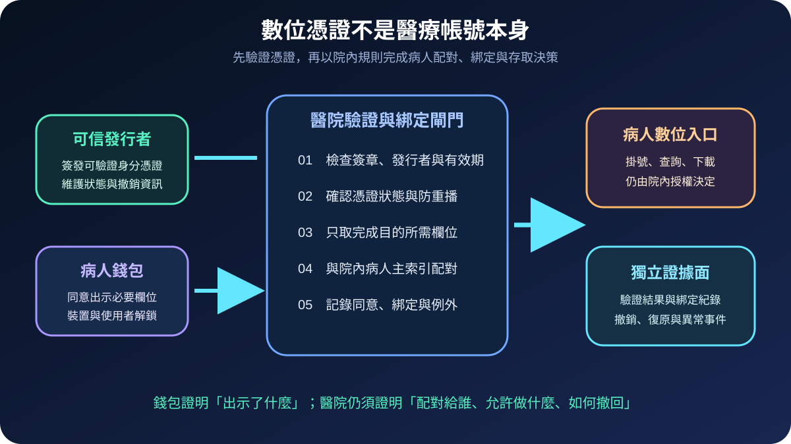
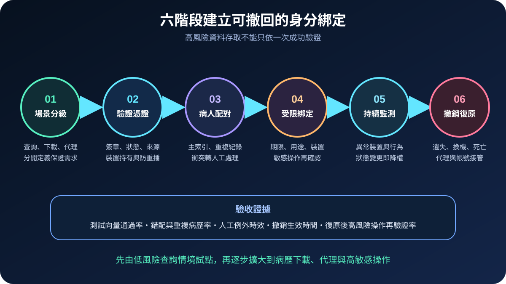
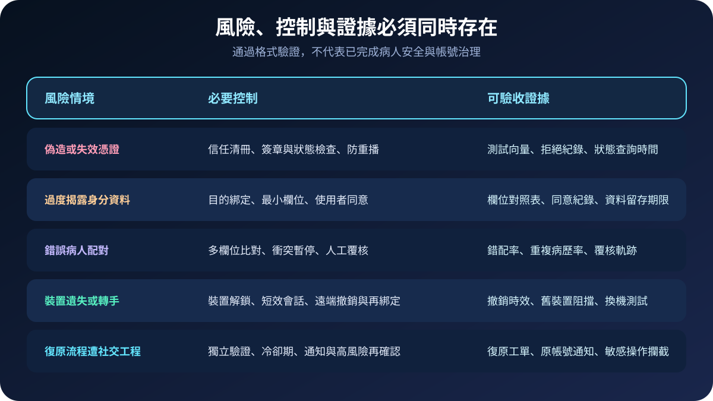

醫療資安國際觀察 · 2026-11-25
病人數位身分錢包如何接入醫療入口：從憑證驗證到帳號復原
作者：Dr. William｜醫療資訊與資安治理實務工作者
可驗證數位憑證可降低人工輸入與偽造文件風險，但醫院仍須處理病人主索引配對、代理關係、資料最小化、裝置遺失與帳號復原，不能把「憑證有效」直接等同「可存取病歷」。
名詞解釋：mDL、數位身分錢包與選擇性揭露
行動駕照（mDL）是由可信發行者簽發、存於行動裝置並可由驗證端檢查的數位憑證。數位身分錢包保存一項或多項憑證；選擇性揭露讓使用者只出示完成目的所需欄位。這些能力處理憑證真偽與出示範圍，院內帳號綁定、病人紀錄配對及醫療資料授權仍屬醫院責任。
國際現況與適用邊界
NIST NCCoE 於 2026 年 11 月發布 SP 1800-42 第二版公開草案，示範行動駕照的發行、持有與驗證架構；NIST SP 800-63-4 則分別規範身分確認、驗證器與聯邦式身分的保證概念。HHS 醫療產業資安實務把身分與存取管理列為醫療機構的重要控制領域，強調存取應依角色、風險與業務需求管理。
法域與適用原則：NIST 行動駕照實作與數位身分指引屬美國技術參考，HHS 文件面向美國醫療產業；均不構成台灣醫療機構的直接法定義務。台灣院所若評估數位身分錢包，仍須依本地個資、醫療、電子簽章、主管機關及院內病人身分治理要求決定適用範圍。
規劃：先定義場景與保證需求
可先區分掛號查詢、病歷下載、醫療費用、代理人存取與高敏感操作，再為每一場景定義可接受發行者、必要欄位、憑證狀態來源、病人配對規則、人工例外、綁定期限與再驗證門檻。驗收指標可包含錯誤配對率、重複病歷率、撤銷生效時間、例外處理時效、舊裝置阻擋率與復原後高風險操作再驗證率。
實作：六階段建立可撤回綁定
- 場景分級：依資料敏感度與錯誤後果決定保證需求。
- 驗證憑證：檢查簽章、發行者、有效期、狀態、持有與防重播。
- 病人配對：以多欄位及病人主索引比對，衝突轉人工處理。
- 受限綁定：限制用途、期限、裝置與敏感操作，保存同意。
- 持續監測：偵測異常裝置、會話及憑證狀態變更並降權。
- 撤銷復原：處理遺失、換機、代理與帳號接管，復原後重新驗證。

風險：身分格式正確仍可能連錯病人
偽造或失效憑證需要信任清冊與狀態檢查；過度揭露需要目的綁定與最小欄位；病人主索引衝突需要暫停自動綁定；裝置遺失需要短效會話與遠端撤銷；復原流程則可能成為社交工程入口。每項控制都應留下可重演的拒絕、覆核、撤銷與通知證據。

可執行清單
- 是否為每個使用場景定義可接受發行者與保證需求？
- 是否檢查憑證簽章、狀態、有效期、持有與防重播？
- 是否只要求完成目的所需的最小身分欄位？
- 病人主索引衝突是否停止自動綁定並轉人工覆核？
- 代理人、未成年人與監護關係是否有獨立治理流程？
- 遺失、換機與帳號復原是否能撤銷舊裝置並通知原帳號？
- 高風險操作是否在復原或異常狀態後重新驗證？
來源
- NIST｜NIST Project Aims to Accelerate Mobile Driver's License Adoption（發布：2026-11-19；查閱：2026-11-25）
- NIST NCCoE｜SP 1800-42, Digital Identities — Mobile Driver's License, Second Preliminary Draft（發布：2026-11；查閱：2026-11-25）
- NIST｜SP 800-63-4, Digital Identity Guidelines（發布：2025-08-01；查閱：2026-11-25）
- HHS 405(d)｜Health Industry Cybersecurity Practices 2023 Edition（發布：2023；查閱：2026-11-25）
內容說明
本文依健康台灣深耕計畫相關治理內容整理，並參考 NIST 與 HHS 官方資料，說明病人數位身分錢包接入醫療入口時的信任邊界；不把美國技術指引視為台灣醫療機構的直接法定義務，也不取代主管機關要求、病人身分管理程序、個資影響評估或獨立安全測試。